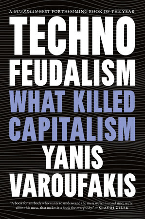

(Audio) Technofeudalism, by Varoufakis
Saturday November 9, 2024
The generous interpretation is that Varoufakis understands that his technofeudalism is not distinct from capitalism but that since capitalism's valence is unassailable, perhaps a new word can be more successfully attacked. (The less generous interpretation is that he wants credit for a catchy idea.)
In the book, Varoufakis is personable. He's likeable. His writing is friendly, and his stories about his father are charming. And he likes Star Trek, which is a great sign of character.
His technofeudalism refers to the monopolistic market capture, "moats," and rent-seeking of (mostly) big tech. But this is just capitalism as usual; Rockefeller would be on board. Thinking of capitalism as pro-competition is ridiculous.
He says some things about historical materialism, which is kind of interesting. I buy into the importance of technology for enabling big structural changes to standard of living, for example. (See also: Fully Automated Luxury Communism)
There's also something interesting about separating the exchange or commodity value vs. the experiential value of things (like work). Varoufakis says employers profit because they pay commodity price for workers' time but get the "experiential" (real?) value of their work. In some sense, a company pays out less than it takes in, if it can, but I'm not sure this decomposition holds in a meaningful way. Generally I think Marx focused on labor too much in a similar way to how physiocrats focused on agriculture (land) too much.
Varoufakis is a little too weird. His use of Amazon Alexa as an example is unfortunate, given how it's largely a failed technology. He doesn't seem technologically literate when he talks about ML, which makes me wonder how good he is in fields I know less about. Like Bernie, he's concerned about Black Rock/Vanguard/State Street, but I think this concern is mostly silly. And he's into balancing trade between nations. (Is this mercantilism?)
So while I'm not with him everywhere, I have a lot of respect for at least proposing some alternative. (He summarizes his ideas from Another Now.) And that may be the whole point of Technofeudalism - getting more people to look at his ideas. It worked on me.
